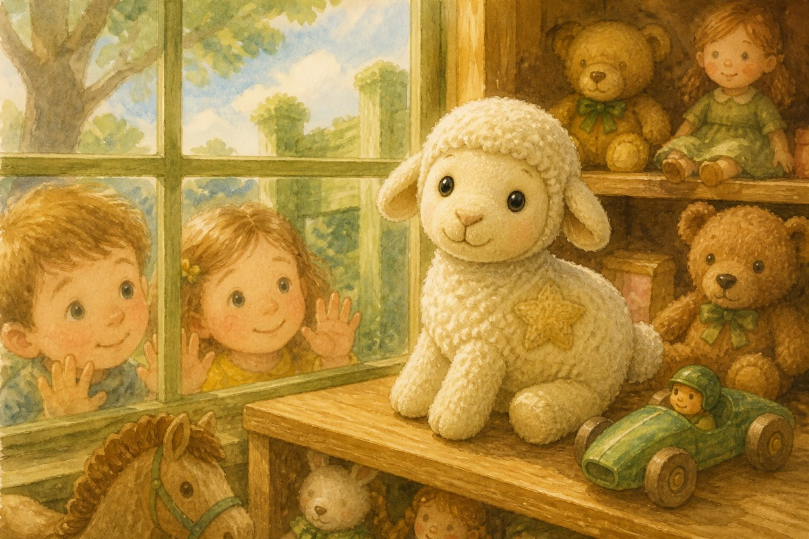

Star Finds a HomeA Star of the Toy Farm story
From a kid, to a kid
A Star of the Toy Farm story. Next: Star and the Midnight Feast.
Star is a toy sheep who wonders why she exists. When she becomes Sophia’s birthday gift, she finds friends on the toy farm — but a missing cow named Mia pulls her into her first real adventure.
Main characters
12 chapters · sample of 1–2
- On the ShelfStar watches the shop window and wonders what she is for.
- Chosen (and Wrapped!)Sophia’s parents pick her — then the paper closes around her.
- Birthday MorningVoices, torn paper, a hug. The toy farm begins.
- Bundle and a PurposeA toy dog welcomes her, and the big question starts to answer.
- My Name is StarSophia names her the brightest of her toys.
- Bedtime (and the Door)First night on hay — and a door Mia once walked through.
- The Silver MonsterA vacuum chase, a rule about grown-ups, and a question about Mia.
- Finding MiaA search, a tag in the grass, and a cow who learned the outside.
- Farmyard LeadersBundle’s reunion — then counting everyone and closing the little door.
- The Mountain DayOne Saturday trek: courage in a bag, a picnic, and hillside grass.
- When Sophia Is PoorlyStar and Bundle sneak in as nurses.
- A FamilyShelf, name, Mia, mountain, care — and belonging.
On the Shelf
I lived on a shelf in a toy shop, right near the window. Every morning, sunlight poured onto my wool, and every evening I watched the street lights blink awake. I was a toy sheep — soft, quiet, and very curious.
From my shelf I could see people walking past with shopping bags, dogs tugging on leads, and children pressing their noses to the glass. Sometimes a child would point at me and smile. That was the best feeling in the world. Then they would leave, and I would wonder again.
Why was I here? What was I for?
The other toys around me seemed so sure of themselves. The teddy bears looked cuddly. The racing cars looked fast. The dolls looked ready for tea parties. I only knew how to sit still and wait.
At night, when the shop closed and everything grew quiet, I stared at the moon through the window and whispered to myself, “One day, someone will choose me. One day, I will know why I exist.”

I did not know then that my day was almost here.
Chosen (and Wrapped!)
It happened on a busy afternoon. A kind-looking couple stopped in front of my shelf. The lady picked me up carefully and turned me around, checking my soft ears and little blank tag.
“She’s perfect,” she said. “Sophia has been wanting a sheep for her toy farm.”
“Then she’s coming home with us,” the man replied.
Home? Farm? Sophia?
Before I could even understand those words, they carried me to the counter. Money changed hands. A bag rustled. Then — oh no! — they put paper all around me!
It was so tight inside. There was hardly a finger’s gap. I almost couldn’t breathe (well, toys don’t really breathe, but it felt like that!). I heard them sticking something on the paper and wondered, “Why exactly am I in a stuffy package when I am meant to be cuddled and played with?”
It was dark and scary. I wished I could go back to my shelf and look outside the window. There wasn’t even a tear to peep through! I just sat in there, not knowing what was going to happen to me.
I was scared… and a little excited too. Somewhere out there, a girl named Sophia was waiting — and I was going to be her birthday present.
Continue on Amazon
This is a free Look Inside — the cover, the chapter list, and the first two chapters. The rest of Star Finds a Home is on Amazon Kindle.